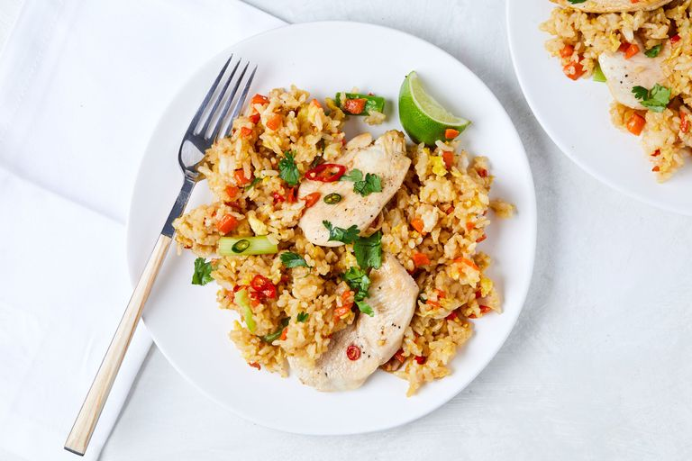

Thai Chicken Fried Rice

Simply the best choice when you have a leftovers!
Fried remains the best thing to do with leftover rice.
The slightly dried out rice will absorbed more of the flavors and crisp up slightly as is cooks.
Something fresh rice could never do.
Ingredients
- 2-3 red chilis, thinly sliced
- 3 tbsp. fish sauce
- 2 tbsp. vegetable oil
- 2 chicken breasts, thinly sliced
- Salt and pepper to taste
- 1 medium carrot, peeled and diced
- 4 cloves garlic, minced
- 4 green onions
- 1 tsp. freshly minced ginger
- 4 c. cooked white rice
- 3 tbsp. oyster sauce
- 2 large eggs, beaten
- Freshly chopped cilantro
Steps
- In a small bowl, combine chilis and fish sauce. Set aside while you prep the rest of your ingredients.
- Season chicken with salt and pepper. In a large skillet over medium-high heat, heat 1 tablespoon oil. Add chicken and cook, tossing occasionally, until cooked through, about 5 minutes. Remove chicken from skillet and set aside on a plate to keep warm. Drain skillet, if needed.
- Return skillet over medium-high heat and heat remaining tablespoon oil. Add carrots and cook until softened, 3 minutes. Add garlic, green onions, and ginger and cook until fragrant, 1 minute. Add rice, 3 tablespoons of the fish sauce mixture, and oyster sauce. Toss until rice is well coated, then push rice to one side of pan.
- On the empty side of the pan, add a little more oil if your pan is dry. Add beaten eggs and scramble with a rubber spatula until just barely set, then combine with rice. Return chicken to skillet and stir to combine.
- Serve with cilantro, lime wedges, and any remaining fish sauce.